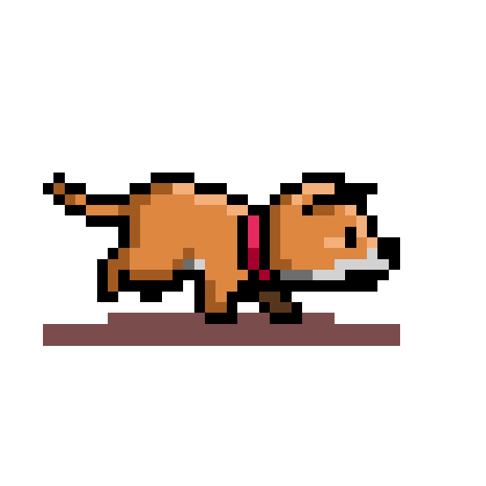

Walking the dog
Okay now Fibo needs walking.
Fibo is a good boy but he's very particular about his walks. He always starts by standing still for a momment, and then walks one meter to the north. He then turns 90 degrees to the right and walks one meter to the east, turns and walks two meters to the south, then three to the west. And he carries on like that. Turning to the right and then walking the sum of the previous two distances. It's unclear how we get back home.
In the coordinate system we're using, after walking the first distance to the north, we're at the location (0, -1). After walking east from there we are at (-1, 1). Two meters south from that and we're at (1, 1), and so on:
- (0, -1)
- (1, -1)
- (1, 1)
- (-2, 1)
- (-2, -4)
- (6, -4)
- (6, 9)
- (-15, 9)
- (-15, -25)
- (40, -25)
So after walking 10 distances, we're at (40, -25).
What should I do?
Your task is to find out what location we are at after walking 63 distances.
Show Me The Code!
Output
Submit Your Solution
What location are you at after walking 63 distances?
Can't log in/submit stuff on this version.Less static version possibly at https://kodemedmening.computas.com.